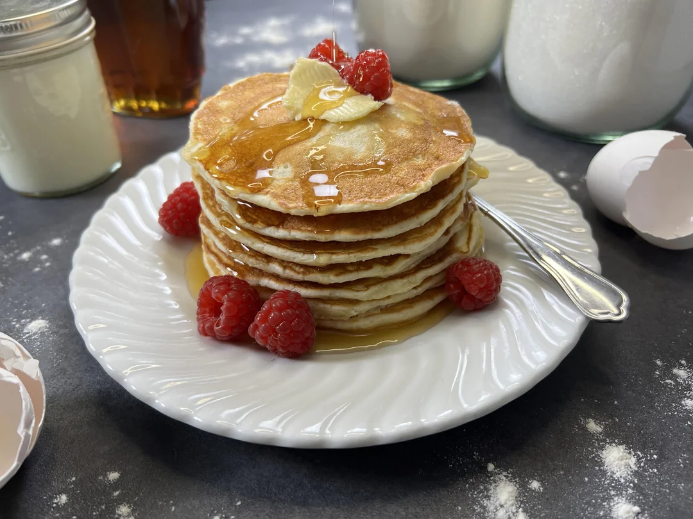

Home
Cheesecake Crepe Roll-Ups

Light, Fluffy, and Ready in 15 Minutes!
Ingredients
- 1 cup wheat flour
- 1 tbsp sugar
- 1 tsp baking powder
- ¼ tsp salt
- 250 ml buttermilk
- 1 egg
- 1 tsp vanilla sugar
- 1½ tbsp butter
Steps
- Mix the dry ingredients – In a large bowl, combine flour, sugar, vanilla sugar, baking powder, and salt
- Prepare the wet ingredients – Melt the butter and mix it with buttermilk and egg in a separate bowl.
- Make the batter – Pour the wet ingredients into the dry and mix until just combined. Do not overmix for fluffier pancakes
- Preheat the pan – Heat a pan on low to medium heat.
- Cook the pancakes – Pour spoonfuls of batter into the pan. Flip when bubbles form and cook until golden brown on both sides.